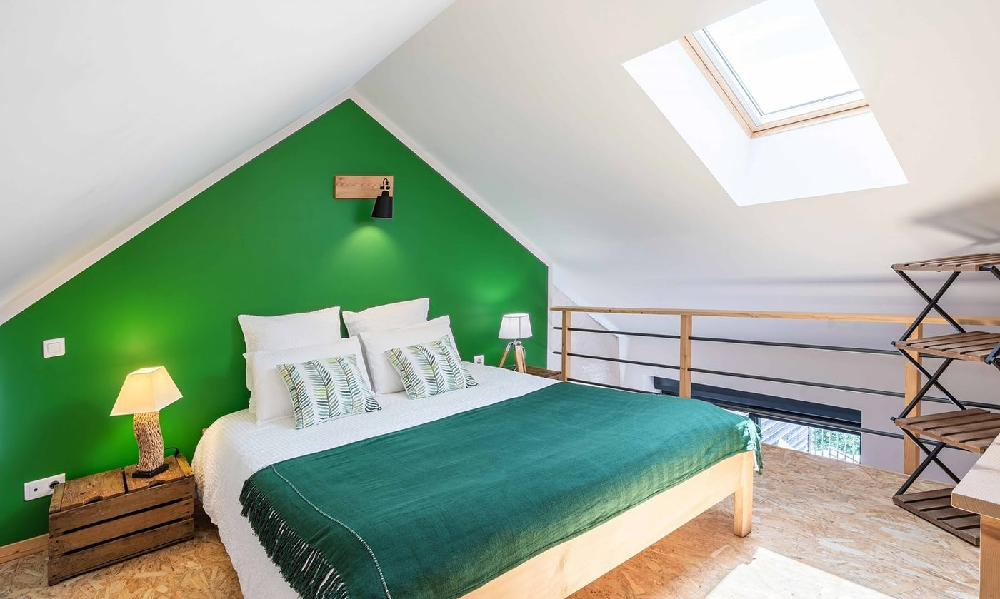
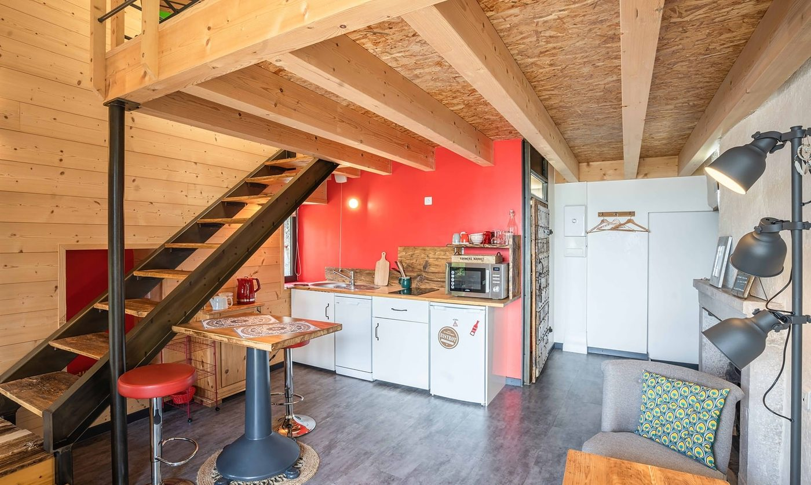

Pour 2, le plus intime
L’Écurie
L’Écurie est un sartôt rénové de 25 m², avec sa chambre en mezzanine, son poêle à bois et une terrasse privative de 15 m² plein sud, face aux Alpes et à la piscine.
25 m²terrasse 15 m²2 adultes1 lit 160 × 200 en mezzanine